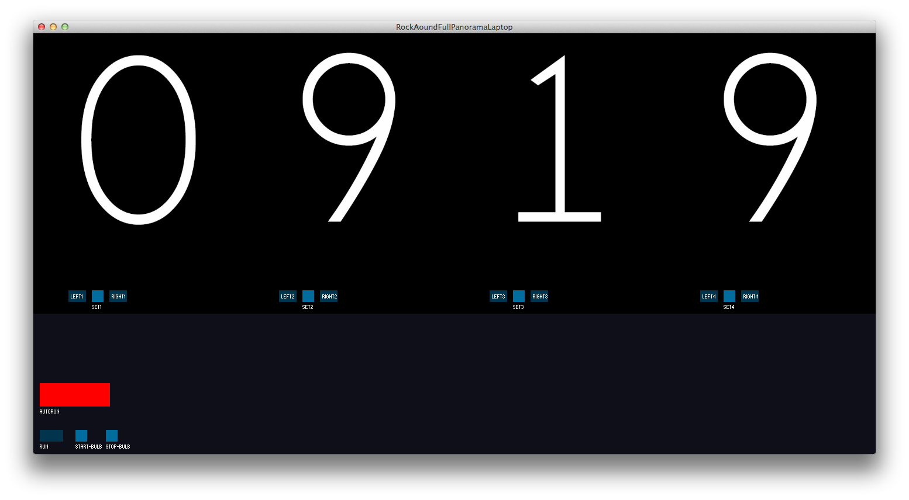
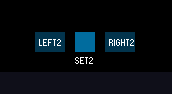
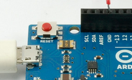

Fiche technique : Rock Around The Clock
Ce projet est technique, et peut rapidement disfonctionner, il convient de ne pas paniquer ! en cas de problème, on peut l'arreter ou le laisser en stand-by Contacter le technicien référent, coordonées en partie 7.
1. Allumage
- vérifier que toutes les rallonges electriques soient branchées, que les boutons des multiprises soient allumés
- allumer l'ordinateur si il ne l'est pas.
- vérifier que les 4 hélices affichent
une animation de lumière blanche, et que les hélices ne tournent pas.
- si une des 4 hélices n'affichent pas
une animation de lumière blanche, voir la procédure de redémarage d'une hélice
- cliquer sur l'icone présente sur le bureau.
- attendre l'ouverture de la fenetre éditeur Processing
- cliquer sur le menu
Sketch > Present ou bien le raccourci clavier +⇧+c
- la fenetre avec l'heure et les boutons de contrôle s'affichent en plein écran
2. Démarrage des cycles automatiques
- par défaut, au lancement du programme sur l'ordinateur, les hélices ne tournent pas.
- vérifier le calibrage (3)
- appuyer sur le bouton
rouge nommé AUTORUN
- l'appereil photo se déclanche et fait un clic
- le video projecteur devient bleu
- les 4 moteurs se lancent
- les lumière arrête leur boucle automatique et se mettent à dessiner les chiffres de l'heure.
- après un tour, les moteurs s'arrêtent
- l'appereil photo stop et refait un clic
- le vidéoprojetcteur affiche la photo qui vient d'être prise
- attente de 40 secondes avant redémarrage automatique du cycle

3. Arrêt des cycles automatiques
- il est possible d'arrêter les cycles à tout moment en appuyant sur le bouton
ÀUTORUN vert il passe alors au rouge, et termine le cycle.
- il est recommandé d'appuyer sur le bouton
ÀUTORUN vert pour arrêter uniquement quand les hélices ne tournent pas.
- vous pouvez lancer un seul cycle en appuyant sur le bouton run. après un tour il s'arrete.
4. Calibrage
le calibrage est facultatif, il permet de corriger une rotation accidentelle de l’œuvre. En effet, les moteurs induisent, avec la durée, un rotation supplémentaire, qui amène une rotation non désirée des chiffres.
- sur l'ordinateur, vérifiez que vous êtes bien en pause (le bouton
AUTORUN doit être rouge) et que les hélices ne tournent pas.
- chaque moteur a 2 boutons pour faire tourner à gauche (left) et à droite (right), il suffit de maintenir le bouton de la souris sur le bouton pour le faire tourner dans un sens ou un autre.
- ajustez la pale pour que la guirlande de leds soit à la verticale, en haut.
- appuyez sur le bouton
set situé entre les boutons left et right pour valider la position de l'hélice.
- passez à l'hélice suivante. et opérez de la même manière.

5. Procédure de redémarage d'une hélice.
- vérifier que la carte est allumée.
- appuyer sur le bouton poussoir
reset de la carte Arduino.
Les cartes électroniques arduino sont présentent sur chaque hélices. plusieurs cartes s'encastrent les unes sur les autres. La carte Arduino est celle qui est le plus à l'interieur, vers le moteur et les pâles. le bouton de reset est un petit bouton situé en bas à gauche (environ 3mm de diametre, rouge foncé)
après avoir appuyé, l'hélice doit afficher l'animation de led blanche.

- si vous ne trouvez pas le bouton de reset, il est possible de redémarrer simplement l'hélice en branchant débranchant/rebranchant le secteur. le seul risque est que le démarrage ne fonctionne pas, auquel cas, vous pouvez réessayer jusqu'à obtenir
l'animation de lumière blanche.
6. Diagnostiques et solutions
6.1 les leds ne s'allument pas sur une hélice
- tenter la procédure de redémarage d'une hélice.
- ensuite, si ça ne change pas au bout de 10 tentatives, il se peut que le cable de commande des guirlandes de leds soit deconnecté, il faut rebrancher un fil vert et le mettre dans la fiche numérotée 5 de la carte la plus extérieure.
6.2 les cartes électroniques ne s'allument pas
- aucun voyant lumineux ne s'allume sur les cartes electroniques sur les hélices.
- tenter la procédure de redémarage d'une hélice.
- si cela ne suffit pas, débranchez et appelez le technicien.
6.3 l'appareil ne semble plus prendre de photo
- cliquer sur les boutons de test
START-BULB et STOP-BULB, situés en bas à gauche de la fenetre, pour essayer de déclancher l'ouverture, puis la fermeture de l'appareil photo.
- si il ne se déclenche plus (on entend un clic) appeler le technicien.
6.4 autres problèmes
7. contact technique ESAD Orléans
Arthur Violy
avioly@esad-orleans.fr
06 88 01 42 24